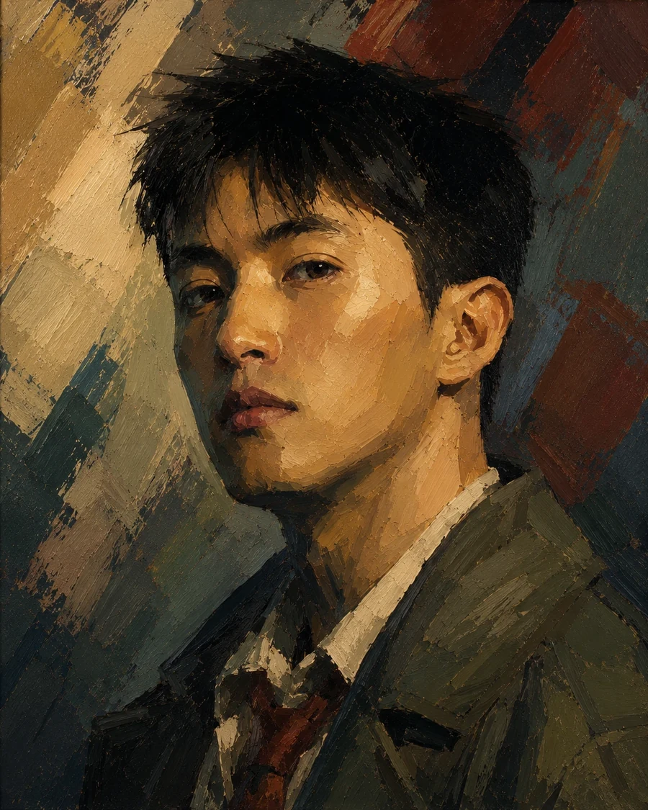

Show the Signal, Hide the Noise: Spectral Forcing for Pixel-Space Diffusion
arXiv 2026
Pixel space, with nowhere for the noise to hide.


I am a Second-year PhD student at MMLab@NTU, Nanyang Technological University, under the supervision of Prof. Ziwei Liu. I earned my Bachelor’s degree from the University of Electronic Science and Technology of China (UESTC) and my Master’s degree from the National University of Singapore (NUS). My research centers on video generation, diffusion models, and robotics.
Bachelor’s — UESTCMaster’s — NUSPhD — NTU (in progress)
Ordered newest first. Every title below resolves to a source.
Refereed peer-reviewed venue Dashed preprint or technical report
Pixel space, with nowhere for the noise to hide.

Understanding and generation under one architecture, which is the hard version.
RhetoricTechnical report. Core contributor credit, not first author.

Semantics and pixels held in one autoencoder, stated as a hypothesis rather than a trick.

Guidance reconsidered at the zeroth step. The asterisk is load-bearing.

Project Page arXiv Dataset Code
A parallel transformer, scaled up, and the dataset shipped with it.
RhetoricPreprint. Nineteen authors; co-first among them.

What happens between the layers turned out to be the thing worth rethinking.

Any modality, any resolution, any duration — an ambitious sentence to defend.
RhetoricTechnical report, not peer reviewed. Contributor credit.

The model is given the link between examples, not only the examples.

Weights, tasks and visual embeddings, mixed jointly rather than stacked.
RhetoricTechnical report, not peer reviewed. Contributor credit.

Translation that keeps its fidelity by keeping its hierarchy.

An endoscope that looks where the surgery is going. The robotics start here.
* denotes equal contribution.
Research Manager
Singapore
Research Scientist
Singapore
Computer Vision Researcher
ShangHai
Research Intern
Singapore
Arrow keys, or drag.
EncyclopediaSolved. Lamplight is in the masthead from now on.